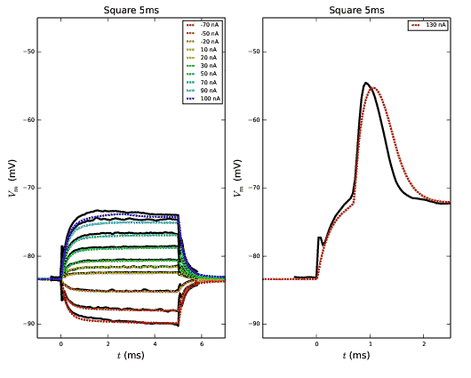
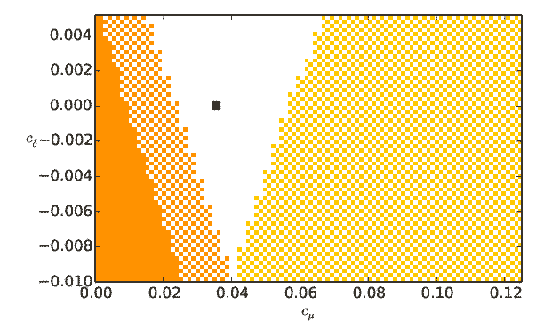
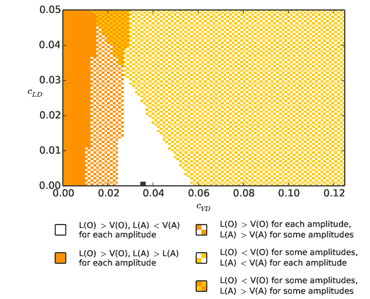

This is a multicompartmental Hodgkin-Huxley-type of model of a goldfish Mauthner cell. The building and usage of the model is
described in "Differential processing in modality-specific Mauthner cell dendrites" by Violeta Medan, Tuomo Maki-Marttunen,
Julieta Sztarker, and Thomas Preuss, Journal of Physiology (2017). The model is implemented in NEURON with Python interface.
Tuomo Maki-Marttunen, 2013-2017 (CC-BY 4.0).
Code files included:
I1.mod # A mod file for a sodium-type current
I2.mod # A mod file for a potassium-type current
mcell.hoc # An HOC file for running the simulations with square and ramp stimuli
mcell.py # A Python library for running the simulations, both one with square+ramp
# stimuli at soma and one with stimuli at the ends of dendrites. For an
# example on how to use the library, see runfit.py (the only script
# where this library is used)
mcell_activedend_varycoeffsL.py # A Python library for simulations with active dendrites
mcell_activedend_varycoeffs_activeL.py # A Python library for simulations with active ventral dendrite
minimizedimbydim.py # A Python library for minimizing a function dimension by dimension
mosinit.hoc # An HOC file that runs mcell.hoc
mytools.py # General Python tools
neurmorph.hoc # The neuron model initialization file
neurmorph_activedend.hoc # The neuron model initialization file, including active dendrites
runfit.py # A Python script for optimizing the neuron model parameters
runmauthner.py # A Python script for running simulations for Figure 7B
runmauthner_activedend_decays_varycond.py # A Python script for running simulations for Figure 9A
runmauthner_activedend_decays_varycond_activeL.py # A Python script for running simulations for Figure 9A
Data files included:
experimental_data.mat # A MATLAB file with experimental data with square and ramp stimuli
fit.eps # Figure 7B. Saved by runmauthner.py
decay_orders_robustness.eps # Figure 9A. Saved by runmauthner_activedend_decays.py.
decay_orders_robustness_activeL.eps # Figure 9B. Saved by runmauthner_activedend_decays_varycond.py.
Data files saved by the scripts:
run*.dat # Data produced by mcell.hoc. Not used in this entry, however, as mcell.hoc is run
# from the Python interface (in runmauther.py) and the data is thus saved in the memory.
activedend_decays_varyconds.sav # Data for Figure 9A. Saved by runmauthner_activedend_decays.py. Used only if the
# script is run for a second time.
activedend_decays_varyconds_activeL.sav # Data for Figure 9B. Saved by runmauthner_activedend_decays_activeL.py. Used only if the
# script is run for a second time.
Before running the simulations, compile the mod files by typing
nrnivmodl
For simulating the model and plotting the results (in Python), run
python runmauthner.py
python runmauthner_activedend_decays_varycond.py
python runmauthner_activedend_decays_varycond_activeL.py
Output from runmauthner.py:

Output from runmauthner_activedend_decays_varycond.py:

Output from runmauthner_activedend_decays_varycond_activeL.py:

The second and third simulations are relatively heavy (take approximately half an hour on a standard computer),
and once finished, the results are saved in activedend_decays_varyconds.sav and activedend_decays_varyconds_activeL.sav
for possible later use.
Alternatively, the model can be run with the HOC interpreter as follows
nrniv mcell.hoc